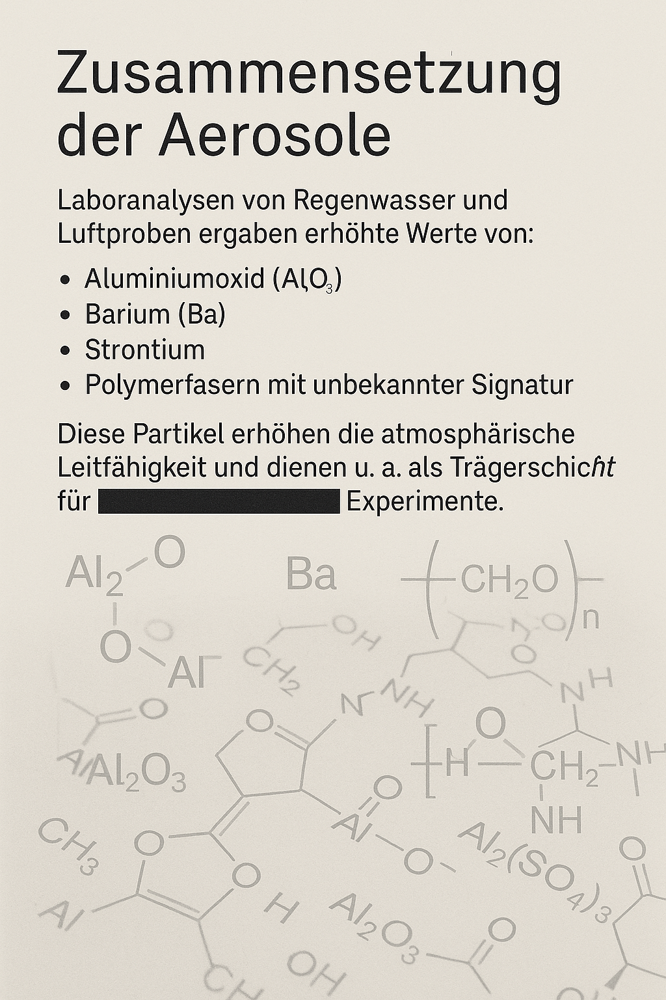
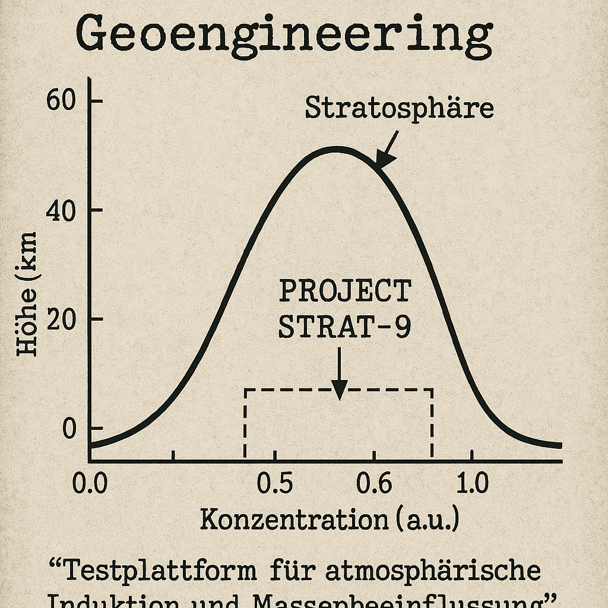

Seit den frühen 2000er Jahren häufen sich Berichte über ungewöhnliche Kondensstreifen, die sich stundenlang am Himmel halten und sich ungewöhnlich weit ausbreiten. Das Projekt STRAT-9, auch bekannt als „Aerosol Deployment Initiative“, ist eine streng geheime Operation zur atmosphärischen Manipulation.
Laboranalysen von Regenwasser und Luftproben ergaben erhöhte Werte von:
Diese Partikel erhöhen die atmosphärische Leitfähigkeit und dienen u. a. als Trägerschicht für ██████████████ Experimente.
Offiziell wird behauptet, es handle sich um Maßnahmen gegen globale Erwärmung (z. B. durch Reflektion von Sonnenlicht). Doch geheime Verträge zwischen privaten Geoengineering-Firmen und Regierungen lassen Zweifel an dieser Darstellung aufkommen.
Ein Leak aus dem Jahr ████ beschreibt das Projekt STRAT-9 als „Testplattform für atmosphärische Induktion und Massenbeeinflussung“.
In stark betroffenen Regionen wurden vermehrt Symptome gemeldet wie:
Offizielle Stellen wie das ███████ bestreiten jegliche Kausalität, doch interne E-Mails zeigen: Man ist sich der Risiken sehr wohl bewusst.
Ein ehemaliger Mitarbeiter der zivilen Luftfahrtbehörde gab an, spezielle Flugrouten und „modifizierte Tanksysteme“ seien ihm aufgefallen. Seine Aussagen sind Bestandteil des Dossiers 137-X (PDF).
📦 Docs herunterladen